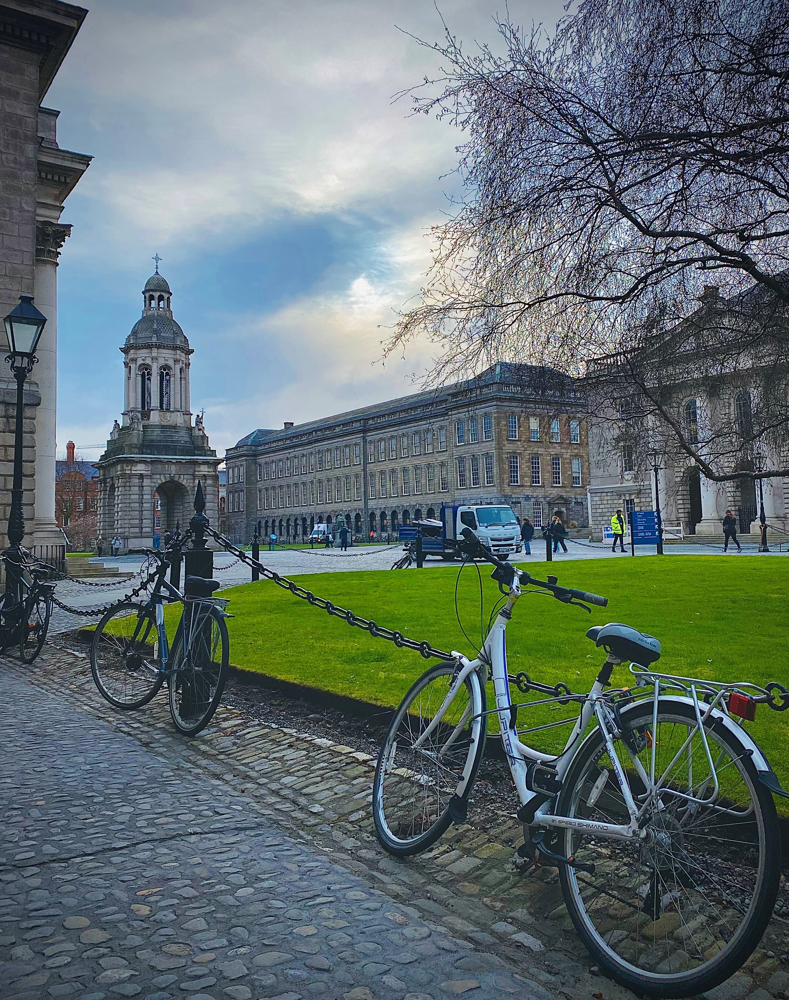
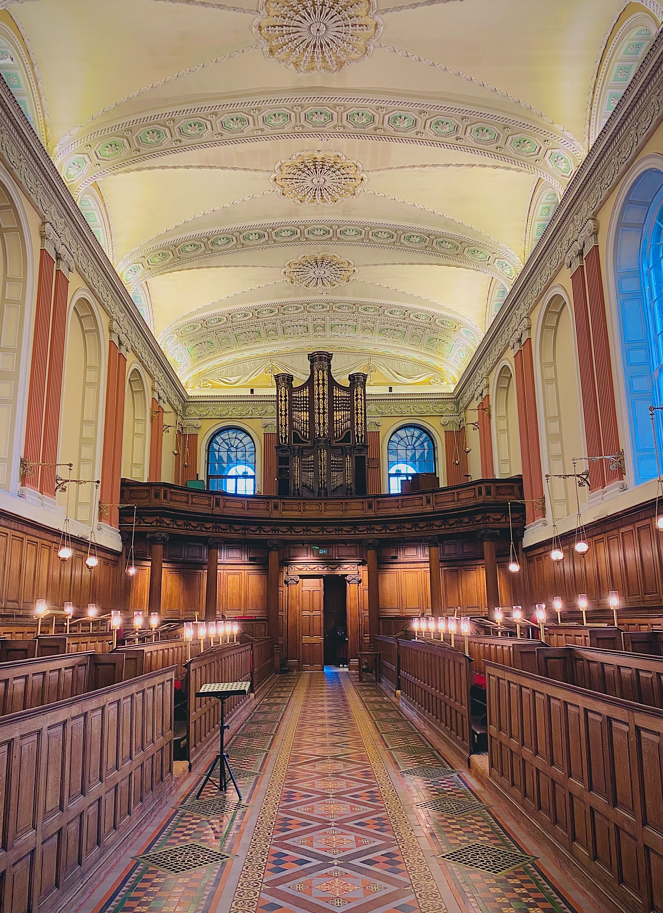
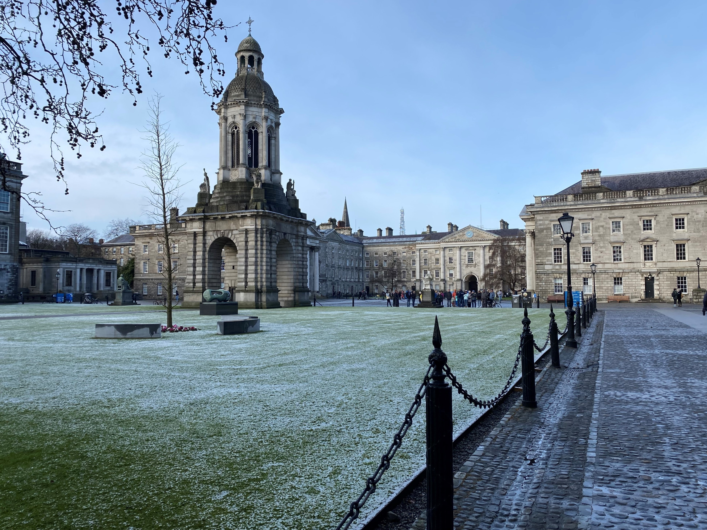
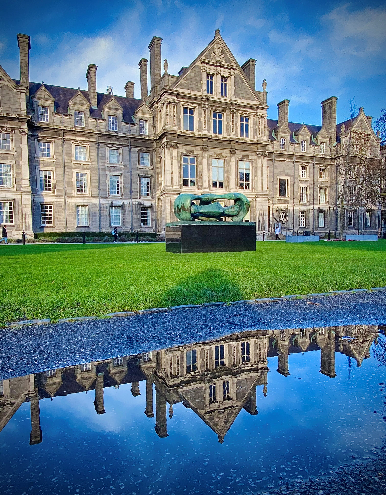

Trinity:
A Digital Reflection
Exhibition
Monday, 9th October 2023
3pm - 5pm
Trinity disAbility Hub
An Mheitheal
Priniting House Square
Trinity College Dublin
Dublin D02 DP29.
Use Scrolling Bar on left to navigate the Trinity: A Digital Reflection Exhibition.
Click on the Toggle Scrolling Bar button to hide the Scrolling bar on the left.
If you are using a mobile or smart phone device, you can just scroll down through the webpage to view the photographs.
The Trinity disAbility Service are delighted to present the Trinity: A Digital Reflection Exhibition.
The Trinity: A Digital Reflection Exhibition photographs by Cristina Boccardo.
Background
Trinity: A Digital Reflection exhibition showcases the many iconic and well known landmarks on the Trinity College Dubin campus. The Campanile, one of Trinity College Dublin’s most iconic structures. The Campanile consists of a round chamber surrounded by four columns that each represent the faculties of law, science, medicine and divinity. All photographs are by Cristina Boccardo who has captured the beauty and magic of the Trinity College Dublin campus.
The Trinity disAbility Service's mission is to create an accessible, transformational, educational environment in an interdependent University community and provide a platform for innovation and inclusion.
The People
Photographs
By Cristina Boccardo
Trinity disAbility Service
Declan Treanor, disAbility Service Director.
Visit the Trinity disAbility Service website.
TCD Sense
Kieran Lewis, Occupational Therapy Manager, Trinity disAbility Service.
Visit the TCD Sense website.
Acknowledgments
- TCD Sense
- Trinity disAbility Service
- Mark Likeman
#1 Reflection ~ Cristina Boccardo
Alt Text: The Campanile in Trinity College Dublin overlooking the Front Square, and the pathway showing the reflection of the Campanile in rain water on the pathway.
#2 Freshers Week ~ Cristina Boccardo
Alt Text: The Front Square in Trinity College Dublin during Fresher s Week. There are a number of white tents and students walking along the patway, with the Campanile in the background. There is a board in the foreground with 'Trinity Freshers Week' written on it.

#3 Bikes ~ Cristina Boccardo
Alt Text: Bikes locked to the chain post on the East Side of the Front Square. In the background there is the Exam Hall, the rear of the Book of Kells, and the Campanile.
#4 Autumn Campanile ~ Cristina Boccardo
Alt Text: An autumn scene. A single autumnal leaf held up in the air in the foreground, with the Campanile in the background, and the pathway. There are fallen leaves on the pathway.

#5 Old Library ~ Cristina Boccardo
Alt Text: The Long Hall in the Book of Kells, Trinity College Dublin. The are a number of bookcases and regularly spaced marble busts guard the library recesses with their white severe stare.

#6 Walking Man ~ Cristina Boccardo
Alt Text: A Silhouette shape of a person walking along the Front Square, Trinity College Dublin. It is an autumnal scene with fallen leaves on the ground, and the Campanile in the background.

#7 Bloom ~ Cristina Boccardo
Alt Text: Enter description.

#8 Botany Bay ~ Cristina Boccardo
Alt Text: Enter description.

#9 Chapel ~ Cristina Boccardo
Alt Text: Enter description.
#10 Christmas ~ Cristina Boccardo
Alt Text: Enter description.
#11 Dusk ~ Cristina Boccardo
Alt Text: Enter description.
#12 Irises ~ Cristina Boccardo
Alt Text: Enter description.
#13 Library Staircase ~ Cristina Boccardo
Alt Text: Enter description.

#14 Magnolia ~ Cristina Boccardo
Alt Text: Enter description.

#15 January Morning ~ Cristina Boccardo
Alt Text: Enter description.

#16 Natural Sciences ~ Cristina Boccardo
Alt Text: Enter description.

#17 Old Library Marble Bust ~ Cristina Boccardo
Alt Text: Enter description.

#18 Winter ~ Cristina Boccardo
Alt Text: Enter description.
#19 Provost Garden ~ Cristina Boccardo
Alt Text: Enter description.

#20 Reflection ~ Cristina Boccardo
Alt Text: Enter description.
#21 Rubrics ~ Cristina Boccardo
Alt Text: Enter description.
#22 Trinity Business School ~ Cristina Boccardo
Alt Text: Enter description.

#23 Spring Campanile ~ Cristina Boccardo
Alt Text: Enter description.